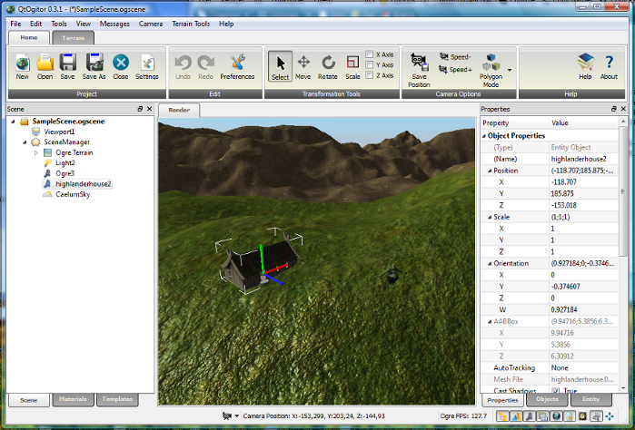

Introduction.
Ogitor is a Plug-In based WYSIWYG editor environment for OGRE. It allows easy creation of scenes which can be loaded in an OGRE application for both rapid prototyping purposes and as final application content. The Ogre inspired Plug-In concept allows user to implement custom Ogre libraries to use them directly in Ogitor. The default scene description format is the XML based ".ogscene" format but ofcourse it is possible to provide and use custom importer/exporter Plug-Ins as well.

The primary focus of Ogitor in difference to other Editor implementations is its Plug-In interface concept which allows the creation of custom plugable modules by users. This allows the addition of new features to Ogitor without changing the core. Obvious additional features are e.g. physic libraries, sound libraries, custom ogre scenemanagers, available ogre plugins etc. Depending on the actual implementation it is possible to fully control these in Ogitor via properties directly.
Ogitor is using the Qt toolkit as its graphical interface, previous GUIs (MFC, wxWidgets) have been discontinued.
Features.
Scene Development.
- Project based management
- Management of Ogre mesh and material files as well as textures
- Adding/removing SceneNodes/Entities/Lights/Cameras via a hierarchical scene tree
- Undo/Redo
- Multi-Selection
- Skyboxes
- General Plug-In interface which allows creation of custom Ogitor Plug-Ins e.g. for your favourite Ogre Plug-In (for example Plug-Ins see below)
- Support for the XML based ".ogscene" import/export format
- Exporter/Importer Plug-In interface which allows the use of custom scene description formats
- Custom data support for scene objects
- Object Node Locking/Unlocking
- Multiple Viewports with their own compositors and mouse response
- Support for "On Demand" creation of underlying objects (for Paging)
- GUI Hook plugins interface
Supported PlugIns.
- Hydrax
- Caelum
- Ogre Paging/Terrain framework (in development)
- PagedGeometry
Roadmap.
- Integrating paging system and Ogre Terrain as soon as they are implemented in Ogre
- In Editor file editing (Material-/Compositor-/Shader scripts) (with possible syntax highlighting)
- Multi functional entity panel supporting mesh editing (via mesh magick)
- Integrating a physic layer (which allows support for upcoming OgPhysX/OgODE/OgNewton plugins)
- Increasing usability (improve Gizmos, support HotKeys, feed preferences dialog)
- Implementation of time line support to create a foundation for advanced Particle effects and animation
- Implementation scripting backend (LUA? Falcon? Python?) which allows chaining of properties and events
- Implementation of basic shadow techniques which hopefully improve the scene composition...
Please feel free to brainstorm/dump ideas, suggestions and feature requests at the Ogitor Forum.